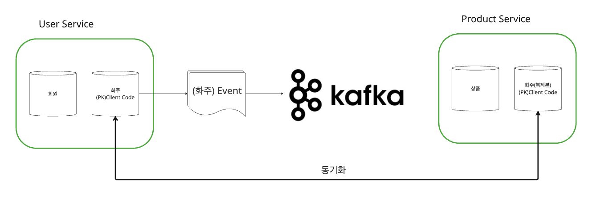
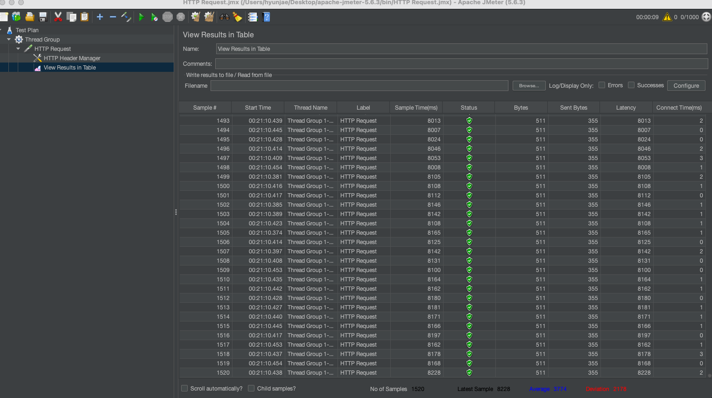

N+1 트래픽 병목
/products/with-client API는 상품과 화주명을 한 번에 보여주기 위해 상품마다 Feign → Gateway → UserService를 반복 호출했습니다. 동시 요청자가 증가하면 네트워크 호출과 DB 부하가 누적되어 서비스 전체 지연으로 확산될 수 있었습니다.
Kafka · Event-Driven Architecture
서비스별 DB 분리로 발생한 N+1 트래픽 병목과 데이터 정합성 문제를 Kafka 이벤트 동기화 구조로 개선했습니다.
MSA 환경에서 서비스별 데이터베이스가 분리되면서, 상품 서비스가 화주 정보를 조회하기 위해 매번 UserService를 호출하는 구조가 생겼습니다. 초기에는 Feign/Gateway 호출로 빠르게 구현했지만, 통합 조회 API에서 N+1 트래픽 병목과 데이터 정합성 문제가 반복될 수 있었습니다.
이를 해결하기 위해 UserService의 화주 생성·수정 이벤트를 Kafka로 발행하고, ProductService가 이벤트를 수신해 자체 DB에 필요한 참조 데이터를 복제하는 이벤트 동기화 구조로 전환했습니다. 조회 시 외부 호출을 제거하고, 장애·재처리 상황에서도 데이터가 꼬이지 않도록 멱등성과 키 기반 파티셔닝을 설계했습니다.

/products/with-client API는 상품과 화주명을 한 번에 보여주기 위해 상품마다 Feign → Gateway → UserService를 반복 호출했습니다. 동시 요청자가 증가하면 네트워크 호출과 DB 부하가 누적되어 서비스 전체 지연으로 확산될 수 있었습니다.
초기 20명/30건 요청에서는 약 120ms 수준이었지만, JMeter 1000명/1500건 동시 요청에서는 평균 3.7초, 최대 8초까지 응답 시간이 증가했습니다. 동기 API 호출 기반의 실시간 조인이 고동시성 상황에서 한계에 도달한 사례였습니다.

MSA의 서비스/DB 분리로 조인 쿼리가 불가능하고, Feign/REST 호출로 실시간 조인을 수행하면 N+1 패턴이 발생했습니다.
UserService에서 화주 변경 이벤트를 Kafka로 발행하고, ProductService가 자체 DB에 복제해 조회 API는 내부 DB만 사용하도록 변경했습니다.
Feign 호출 제거, 서비스 간 결합도 감소, 신규 서비스 추가 시 이벤트 구독만으로 확장 가능한 구조를 확보했습니다.
컨슈머 장애, 네트워크 단절, 중복 이벤트, 재처리 상황에서 데이터가 꼬이면 운영자가 직접 DB를 수정해야 하는 문제가 생깁니다.
Producer에 enable-idempotence, acks: all, retry 설정을 적용하고 Consumer에는 멱등 처리와 수동 오프셋 커밋 기준을 두었습니다.
Kafka는 대용량 메시지 처리뿐 아니라 장애 복구와 데이터 정합성까지 같이 설계해야 운영 환경에서 의미가 있습니다.
동일 화주에 대한 생성·수정 이벤트가 서로 다른 파티션에서 처리되면 역순 반영 위험이 있습니다.
동일 키의 이벤트가 동일 파티션으로 들어가도록 설계해 같은 화주 데이터의 처리 순서를 보장했습니다.
병렬 컨슈머로 처리량을 확장하면서도 같은 키 범위 안에서는 순서를 유지할 수 있었습니다.
| 항목 | 개선 전 | 개선 후 |
|---|---|---|
| 조회 구조 | 상품별 외부 서비스 반복 호출 | 자체 DB 기반 통합 조회 |
| 성능 병목 | Feign/Gateway/DB 네트워크 병목 | 조회 경로 외부 호출 제거 |
| 정합성 | 즉시 조회에 의존 | Kafka 이벤트 기반 eventual consistency |
| 장애 복구 | 실패 시 수동 복구 위험 | 멱등성, 재처리, 파티셔닝 기준 적용 |